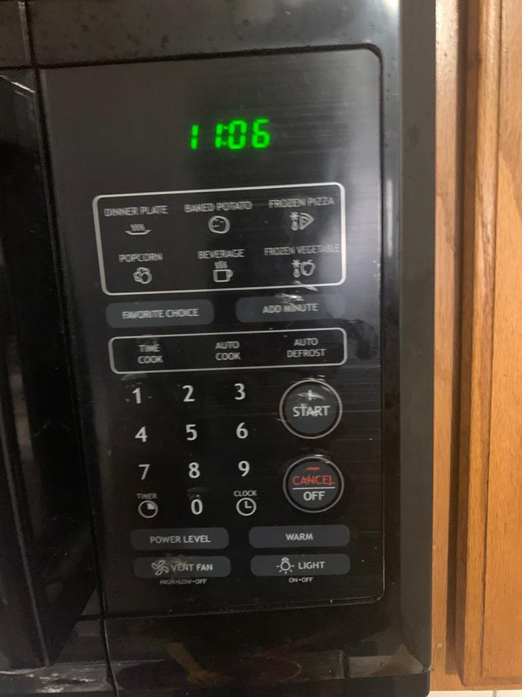

Microwave Interface
This Microwave has basic operations which is basically neccery for every user. It have special features like saving favroutie cooking styles.

Instant Cooking Operation
This Microwave has instant cooking options, which helps user to cook basic items which are commonly used in this region.

Manual Cooking Operation
This Microwave has provided manual cooking. To reduce time consumtion on this feature it is placed in highlited block, since it is most commonly used.